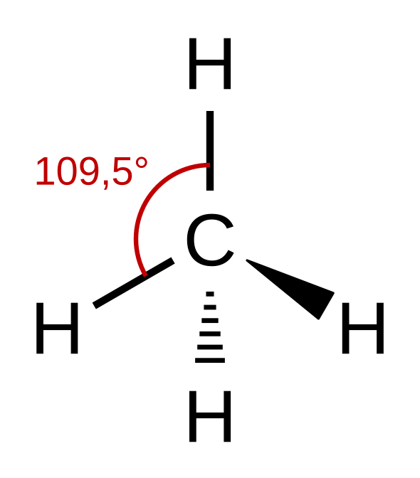
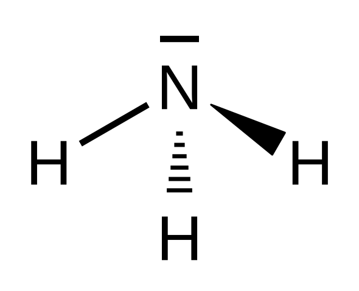
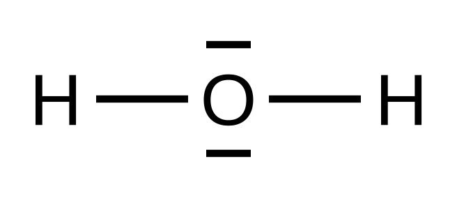
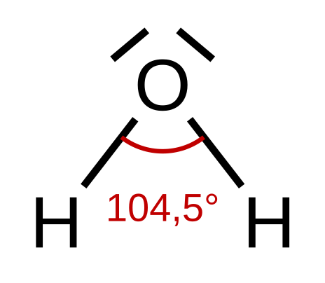

So nutzen Sie die Hilfen: Versuchen Sie es erst allein. Öffnen Sie dann Hilfe 1, danach Hilfe 2. Die Lösung dient zur Kontrolle – vergleichen Sie sie mit Ihrer eigenen Antwort und verbessern Sie diese.
Aufgabe 1: Strukturformeln und Elektronenpaare
Zeichnen Sie die Strukturformeln und ermitteln Sie die Elektronenpaare am Zentralatom!
Hilfe 1
Zählen Sie die Valenzelektronen (C 4, N 5, O 6, H 1) und teilen Sie durch 2 → Anzahl der Elektronenpaare im Molekül.
Hilfe 2
Bindende Paare = Striche zum Zentralatom. Was übrig bleibt, sitzt als nicht-bindendes Paar am Zentralatom (H bekommt keine freien Paare).
Zeichnen Sie die Raumformeln! Wählen Sie das Molekül, bei dem Sie Hilfe brauchen.
So gehen Sie vor
Legen Sie Ihr Knetmodell so hin, dass das Zentralatom und zwei Bindungen in der Papierebene liegen (normale Striche). Die übrigen Bindungen zeigen nach vorne (Keil) oder nach hinten (gestrichelter Keil). Das schmale Keilende liegt am Zentralatom.
CH₄
Hilfe 1
Vier bindende Paare → größtmöglicher Abstand: Tetraeder. Zwei Bindungen in der Ebene, eine nach vorne, eine nach hinten.
Lösung
Strukturformel

Raumformel
tetraedrisch, 109,5°
NH₃
Hilfe 1
Wie beim Methan – aber eine Ecke des Tetraeders ist ein nicht-bindendes Paar (Strich am N-Atom).
Lösung
Strukturformel

Raumformel
trigonal-pyramidal, 107°
H₂O
Hilfe 1
Zwei Ecken des Tetraeders sind nicht-bindende Paare – übrig bleiben zwei Bindungen, beide in der Papierebene.
Lösung

Strukturformel

Raumformel
gewinkelt, 104,5°
Aufgabe 5: Molekülgestalt und Bindungswinkel
Benennen Sie die Gestalt und ordnen Sie den Winkel zu!
Hilfe 1
Für die Gestalt zählen nur die Atome: Vier Atome um das Zentralatom → tetraedrisch; drei Atome und ein freies Paar → trigonal-pyramidal; zwei Atome und zwei freie Paare → gewinkelt.
Hilfe 2
Je mehr nicht-bindende Paare, desto kleiner der Winkel: 109,5° > 107° > 104,5°.
Denken Sie an die Vögel und den Wurm (Abb. 2): Von wie vielen Atomkernen wird ein nicht-bindendes Paar angezogen? Braucht es mehr oder weniger Platz?
Hilfe 2
Nutzen Sie die Satzbausteine im Wortspeicher.
Lösung (erst nach eigenem Versuch öffnen!)
Nicht-bindende Paare werden nur von einem Kern angezogen → diffuser, mehr Raumbedarf → drücken die bindenden Paare zusammen. CH₄ (0) → NH₃ (1) → H₂O (2 nicht-bindende Paare): 109,5° > 107° > 104,5°.
Aufgabe 8: CO₂ und Methanal
Erläutern Sie mit Regel 3!
Hilfe 1
Regel 3: Eine Doppelbindung zählt beim Raumbedarf wie eine Einfachbindung. Wie viele „Richtungen“ (Raumbereiche) gehen dann vom C-Atom in CO₂ bzw. CH₂O aus?